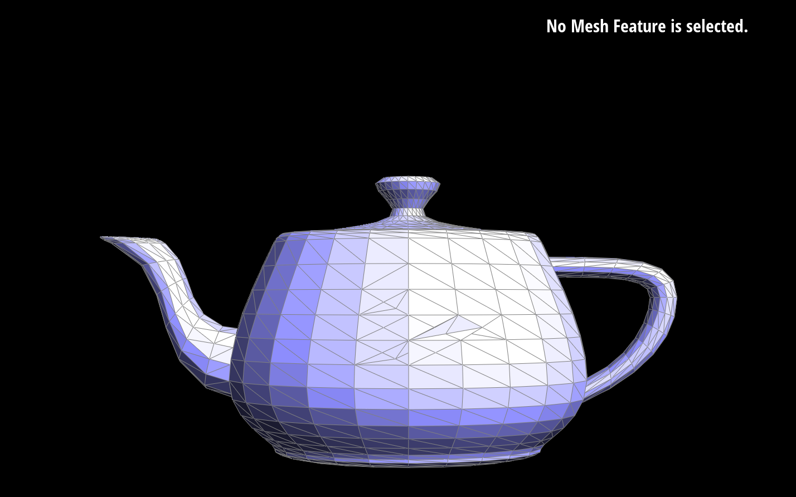

CS184 Project 2 - Max Lord and Eugenia Gavrilova
Overview
1. Give a high-level overview of what you have implemented in this assignment. Think about what you have built as a whole. Share your thoughts on what interesting things you have learned from completing this assignment.
Task 1
1. Briefly explain de Casteljau's algorithm and how you implemented it in order to evaluate Bezier curves.
2. Take a look at the provided .bzc files and create your own Bezier curve with 6 control points of your choosing. Use this Bezier curve for your screenshots below.
3. Show screenshots of each step / level of the evaluation from the original control points down to the final evaluated point.
4. Show a screenshot of a slightly different Bezier curve by moving the original control points around and modifying the parameter t via mouse scrolling.
Task 2
1. Briefly explain how de Casteljau algorithm extends to Bezier surfaces and how you implemented it in order to evaluate Bezier surfaces.
2. Show a screenshot of bez/teapot.bez evaluated by your implementation.
Task 3
1. Briefly explain how you implemented the area-weighted vertex normals.
To calculate the area-weighted normal, we first note that just by calculating the cross product of two vectors representing two edges of the triangle face, that cross product will implicitly include the area.
So, we start at a given half edge, and get each vertex of that half-edge's face, and calculate a vector difference between two pairs of vertices to get two vectors representing two edges.
Next, we take the cross product of those two vectors, negate it so the resulting vector points out of the mesh, and add it to a running vector sum.
Finally, we go to the next face by navigating to the half edge's twin's next half edge, and repeat the process until we are back at the original half edge.
2. Show screenshots of dae/teapot.dae (not .bez) comparing teapot shading with and without vertex normals.
Task 4
1. Briefly explain how you implemented the edge flip operation and describe any interesting implementation / debugging tricks you have used.
First, we set each of the vertices' half-edges to their new half-edge based on the lecture diagram, then did the same for the faces, although they were likely already set correctly.
Next, we saved the values of existing half-edges so when we changed the path of half-edges later we could be sure we were still referencing the correct half-edges after the changes.
Next, we changed the next() pointers of the half-edges that needed it as well as the face() pointers if necessary.
Finally, for the half-edges splitting the triangles that flipped orientation, we set the half-edges' next(), twin(), vertex(), edge(), and face() pointers.
The only notable implementation trick was to save references to half-edge pointers so that we didn't lose track of which half-edges were which after changing next() pointers.
2. Show screenshots of the teapot before and after some edge flips.
3. Write about your eventful debugging journey, if you have experienced one.
The only major bug that arose ended up being due to setting the middle half-edges' next() and twin() pointers to incorrect values.
This happened because we thought we were referencing edge1->next, for example, but a few lines previously we had set edge1->next to be a different edge,
so the half-edges we thought we were referencing were not the actual half-edges being referenced. To fix this, we saved the initial half-edge pointer values so we didn't lose track of them after changing next() pointers.
Task 5
1. Briefly explain how you implemented the edge split operation and describe any interesting implementation / debugging tricks you have used.
First, we created each of the new half-edges and saved pointers to the existing ones but did not set the half-edges' pointers yet.
Next, we did the same with edges and faces, saving pointers of existing edges and faces and creating the necessary new ones. However, we assigned the
corresponding half-edge to the new edges and faces as soon as they were created because all of the half-edges were already available.
Next, we did the same procedure with vertices, plus a calculation of the average position of the two edge vertices to set our new vertex's position.
Finally, now having references to every pointer (next, twin, vertex, edge, face), we set each half-edge's pointers to their corresponding next, twin, vertex, face, and edge.
We knew what the correct pointer assignments were by making a diagram showing an edge split and noting every single pointer that needed to be changed and what it needed to be changed to.
2. Show screenshots of a mesh before and after some edge splits.
3. Show screenshots of a mesh before and after a combination of both edge splits and edge flips.

4. Write about your eventful debugging journey, if you have experienced one.
The code worked on the first run, thanks to making a complete diagram of the split and tracking every pointer that needed to be updated.
Also, we learned a lesson from the flip operation, which is that it was best to save pointers at the start before changing
next, twin, vertex, edge, and face pointers in order not to lose certain pointers and always be referencing the correct item.
Task 6
1. Briefly explain how you implemented the loop subdivision and describe any interesting implementation / debugging tricks you have used.
2. Take some notes, as well as some screenshots, of your observations on how meshes behave after loop subdivision. What happens to sharp corners and edges? Can you reduce this effect by pre-splitting some edges?
3. Load dae/cube.dae. Perform several iterations of loop subdivision on the cube. Notice that the cube becomes slightly asymmetric after repeated subdivisions.
Can you pre-process the cube with edge flips and splits so that the cube subdivides symmetrically? Document these effects and explain why they occur.
Also explain how your pre-processing helps alleviate the effects.
Website Link
https://cal-cs184-student.github.io/sp22-project-webpages-maxqlord/proj2/index.html